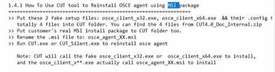

O tool não ta available for public uses

Remove the agent and reinstall with MSI
(não precisa rebootar necessariamente)


 (não precisa rebootar necessariamente)
(não precisa rebootar necessariamente)